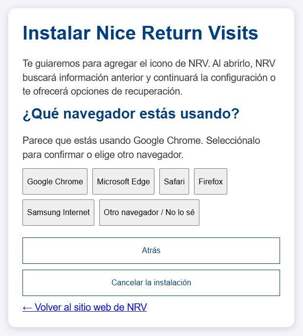

Asistencia
Nice Return Visits: guía de usuario
Descarga la guía completa en PDF.
Instalar Nice Return Visits
- Visita nicereturnvisits.org y elige Abrir NRV. En la pantalla inicial, selecciona Configurar el icono de la aplicación (recomendado). También puedes abrir directamente la guía de instalación.
- Elige tu dispositivo. NRV puede sugerir el navegador que cree que estás usando; selecciónalo para confirmarlo o elige otro. Si la detección fue incorrecta, puedes continuar; si realmente usas otro navegador, abre NRV en el navegador elegido y reinicia la guía.
- Sigue una instrucción a la vez. Cuando aparezca No lo veo, selecciónalo para obtener ayuda para encontrar el control. Usa Atrás, Cancelar la instalación o el enlace al sitio web para salir. Si tu combinación no está cubierta, la guía indica qué navegador usar.
- Después de instalar, cierra la página de instalación del navegador. Busca el nuevo icono NRV en la pantalla de inicio, el menú Inicio, el Dock o el lanzador de aplicaciones, y ábrelo. Si se abre automáticamente una ventana de NRV, continúa allí.
- Acepta los avisos y sigue la configuración o restauración en la copia instalada. Si ya tenías contactos en otra copia, haz una copia de seguridad de esa copia, restáurala en la copia deseada y verifica los contactos antes de borrar el original.
En iPhone o iPad usa una pestaña normal de Safari, no una privada. Los nombres de los controles pueden variar según la versión; la guía interactiva ofrece alternativas para cada navegador y dispositivo.

Referencia rápida por navegador
La guía interactiva ofrece un paso a la vez y ayuda para encontrar cada control. Los nombres pueden variar según la versión. Antes de instalar, abre la página de la aplicación NRV, no esta página de ayuda.
- iPhone o iPad, Safari: usa una pestaña normal. Toca Compartir (cuadrado con flecha hacia arriba), luego Añadir a pantalla de inicio; activa Abrir como aplicación web si aparece y toca Añadir. Si Compartir no aparece, busca en el menú de tres puntos; si falta la acción, desplázate hacia abajo o usa Editar acciones (en iPad, Ver más si aparece).
- Android, Chrome: toca los tres puntos y luego Instalar aplicación, o Añadir a pantalla de inicio si aparece en su lugar. Confirma con Instalar o Añadir.
- Android, Edge: toca el menú de tres líneas abajo y luego Agregar al teléfono; si se pregunta, elige Instalar aplicación en vez de Crear acceso directo. Confirma.
- Android, Firefox: toca los tres puntos y luego Instalar. Confirma si se solicita.
- Android, Samsung Internet: toca el menú de tres líneas abajo, luego Añadir página a y Pantalla de inicio. Confirma si se solicita.
- Windows, Mac u otra computadora, Chrome: haz clic en los tres puntos arriba a la derecha, luego Enviar, guardar y compartir → Instalar página como aplicación. Haz clic en Instalar.
- Windows, Mac u otra computadora, Edge: haz clic en los tres puntos arriba a la derecha, luego Aplicaciones → Instalar este sitio como una aplicación. Haz clic en Instalar.
- Mac, Safari: haz clic en Archivo → Añadir al Dock y luego Añadir. Si no aparece, actualiza macOS y Safari o usa Chrome.
Si el menú móvil está oculto, toca la página y mira arriba o abajo; desplázate por el menú. Si falta la opción en una computadora, busca un icono de instalación al extremo derecho de la barra de direcciones o recarga en una ventana normal. Para combinaciones no cubiertas usa Safari en iPhone/iPad o Chrome en otros dispositivos y reinicia la guía.
Primeros pasos y copias
También puedes elegir Usar NRV en este navegador. En cada copia, lee los Términos de uso y el Aviso de privacidad y datos, marca la casilla y elige Aceptar y continuar. Si NRV encuentra datos anteriores, puedes usarlos o seguir el proceso de borrado y empezar de nuevo; haz primero una copia de seguridad si quieres conservarlos.
En la pantalla de bienvenida de la aplicación instalada puedes elegir Restaurar desde un archivo de copia de seguridad o continuar. Luego puedes configurar valores predeterminados y tus datos, configurar una frase de contraseña opcional o pasar a Contactos. En Configuración → Valores predeterminados y tus datos, indica país, estado o provincia y ciudad predeterminados. Tus datos personales son opcionales; guarda los cambios al salir. Puedes configurar lugares más tarde.
Un navegador, perfil, dispositivo o icono instalado puede tener su propia copia de contactos. Instalar o añadir un marcador no transfiere los datos. Usa de forma constante la copia elegida y guarda una copia de seguridad separada; el icono no sustituye una copia de seguridad.
Agregar y organizar contactos
- En Contactos, elige Agregar un contacto. Introduce el nombre, elige un país y selecciona una ciudad guardada o agrégala; son obligatorios. El apellido, la dirección, el correo, el teléfono, la región, el área y las coordenadas son opcionales.
- Los valores predeterminados preparan los datos de ubicación, pero puedes cambiarlos para cada contacto. Agrega un país, ciudad, región o área desde el formulario cuando lo necesites. La región y el área son opcionales y se eligen después de la ciudad.
- El correo debe tener formato válido. El teléfono admite diez dígitos en formato estadounidense, por ejemplo (555) 123-4567, o un 1 inicial; el selector de país no habilita otros formatos telefónicos.
- Selecciona el icono de guardar al pie del editor. Usa el lápiz de una tarjeta para editarla; al cerrar con cambios sin guardar, lee la confirmación. El signo + del editor permite iniciar otro contacto.
En Configuración → Ciudades, regiones y áreas, agrega ciudades y sus regiones o áreas. Puedes editar nombres y asignaciones o eliminar lugares que no estén en uso. Reasigna primero los contactos si NRV impide eliminar un lugar. Los contactos con nombres iguales tienen identificadores distintos.
Buscar contactos y registrar visitas
Busca por nombre, correo, teléfono, dirección, área o texto de visita. Combina la búsqueda con filtros de urgencia, ciudad, región y área. Para ver todos de nuevo, borra la búsqueda y restablece los filtros. Los mismos filtros determinan qué contactos aparecen en el mapa y en la exportación o impresión de la lista.
Ordena del más reciente al más antiguo, del más antiguo al más reciente o alfabéticamente. El orden por fecha usa la visita más reciente o, si no hay visitas, la fecha de creación. La urgencia usa la misma referencia: normal de 0 a 7 días, urgente de 8 a 14 e inmediata desde 15 días.
- Elige AGREGAR VISITA en una tarjeta, o abre el contacto y luego Visitas.
- Escribe una nota y, si quieres, cambia la fecha y hora. Guarda el contacto con el icono de guardar. Cambiar la fecha puede crear una visita sin texto; si no escribes ni cambias la fecha, no se crea una visita.
- Para modificar una nota anterior, elige Editar junto a ella, cambia sus datos y elige Actualizar registro. Para borrarla, elige Eliminar y confirma. Eliminar un contacto también elimina sus visitas de esa copia.
Para dictar una nota, usa la tecla de micrófono del teclado de tu dispositivo. NRV no graba audio; el dictado depende del dispositivo y puede enviar voz al proveedor del teclado según su configuración.
Mapa, marcadores y direcciones
Una dirección escrita no crea un marcador. En el editor del contacto elige Usar la dirección introducida, revisa los resultados y ajusta el marcador tocando o arrastrando el mapa, o introduce coordenadas. Si se ofrece una búsqueda por calle cercana, puedes usarla. Confirma la posición y guarda el contacto. Una búsqueda de solo ciudad es aproximada.
Usar la ubicación del dispositivo solicita permiso y usa tu posición actual, no necesariamente la del contacto. En Mapa, el punto azul es la ubicación actual y no se guarda en el contacto. Un contacto sin coordenadas puede aparecer en un marcador aproximado de ciudad si la búsqueda en línea tiene éxito. Puedes arrastrar un marcador guardado en el mapa principal; el cambio se guarda automáticamente.
Selecciona un marcador para ver los datos, editar o abrir indicaciones. Las indicaciones abren Google Maps con el destino. Las búsquedas envían el texto de ubicación a OpenStreetMap Nominatim; las imágenes del mapa y las indicaciones necesitan conexión. En Tus datos puedes guardar un marcador de casa y un nombre para identificarte en mensajes compartidos.
El mapa puede centrarse en la ciudad predeterminada si no hay otros marcadores. Las búsquedas pueden ofrecer varias calles o una posición aproximada si no encuentran la dirección completa. Comprueba siempre la ubicación antes de guardar o usar indicaciones.
Compartir, importar y exportar
Abre un contacto guardado y usa Compartir para elegir ninguna nota, la más reciente o todas; luego elige mensaje, WhatsApp o correo. Revisa el mensaje antes de enviarlo: es texto legible, no un archivo cifrado. Guarda primero los cambios si los botones están deshabilitados.
Para transferir contactos, usa el icono de exportación en el contacto o en la barra de Contactos. En la lista puedes elegir todos los mostrados o números y rangos, por ejemplo 3, 4-7, 9. Los números cambian al filtrar u ordenar. Para una selección grande, usa un archivo en lugar de un mensaje.
Si la frase de contraseña está activada, la exportación desde la lista permite elegir cifrado; el archivo cifrado usa la protección de esta copia. Al exportar desde el editor de un solo contacto, se pide crear una frase de transferencia separada de al menos 8 caracteres. Envíala por otro medio. Si esta copia no tiene frase, el archivo se exporta sin cifrar y cualquiera con él puede leerlo. Para importar, usa el icono de importación en Contactos y selecciona uno o varios archivos. Si seleccionas varios archivos cifrados se usa la misma frase para todos; importa por separado los que tengan frases diferentes. Se agregan registros nuevos; revisa si hay duplicados. Un archivo de contactos no es una copia completa de configuración.
Imprimir
El icono de impresora de la barra inferior imprime según la pantalla: en Contactos, la lista filtrada; en Mapa, elige direcciones con números o detalles de contacto; en Configuración, los valores y lugares, pero nunca la frase de contraseña. Para un contacto guardado, abre su editor y usa su impresora; elige la nota más reciente o todas. Guarda primero los cambios. La impresión abre las opciones de tu dispositivo, que pueden permitir guardar un PDF.
La lista impresa agrupa cada contacto por su ubicación más específica y muestra los datos disponibles y solo la nota más reciente. En el mapa los números coinciden con los marcadores; los contactos sin marcador se enumeran aparte.
Tiempo de servicio (opcional)
En Configuración → Tiempo de servicio, activa Registrar tiempo de servicio. Aparece el botón Tiempo y un control para iniciar o detener el cronómetro en Contactos. Actualmente ese control muestra Start Time para iniciar y Stop Time para detener. En Tiempo puedes añadir, editar o eliminar registros y consultar totales. Opcionalmente muestra las metas de 50 horas al mes y 600 horas por año de servicio, del 1 de septiembre al 31 de agosto.
El cronómetro puede seguir mientras la aplicación está cerrada; al volver tras una ausencia, NRV puede preguntar si deseas continuar o detenerlo en la última actividad registrada. Desactivar el registro borra todo el tiempo registrado después de una advertencia. Las copias completas incluyen los registros de tiempo.
El total de hoy empieza de nuevo a medianoche; si el cronómetro sigue funcionando, el tiempo se divide entre los dos días. Los totales mensuales y anuales se calculan a partir de los registros y no se editan directamente.
Frase de contraseña (opcional)
Una copia nueva no exige frase de contraseña y sus datos no están cifrados por NRV. Para activarla, abre Configuración → Datos y seguridad → Frase de contraseña para abrir la aplicación, elige Activar frase de contraseña, introduce y confirma al menos 12 caracteres y guarda. La frase protege esta copia y cifra las nuevas copias completas, pero no sustituye una copia de seguridad.
Código de recuperación
Al activar o cambiar la frase, NRV muestra un código de recuperación. Guárdalo de forma privada y separada del dispositivo: quien lo tenga puede abrir los datos. Si olvidas la frase, introduce el código en su lugar al desbloquear y luego cambia la frase en Configuración. Sin la frase ni el código correspondientes no se pueden abrir los datos cifrados.
En la misma sección puedes cambiar la frase o crear un nuevo código; los códigos anteriores dejan de funcionar para esa copia. Las copias de seguridad antiguas conservan sus propios secretos. Al desactivar la frase, los datos locales y las nuevas copias dejan de estar cifrados y el código deja de funcionar para esa copia; las copias anteriores conservan su protección.
Para cambiarla, elige Cambiar frase de contraseña, introduce la frase actual o el código de recuperación y confirma la nueva frase. Para desactivarla, elige Desactivar frase de contraseña, lee la advertencia y confirma con la frase actual o el código. Los demás dispositivos no cambian hasta que restauren una copia nueva.
Una copia cifrada que incluya metadatos de recuperación se puede restaurar con el código que era válido cuando se creó; algunas copias antiguas no contienen código. Si tenías una frase anterior a esta función, crea tu primer código en la sección de frase de contraseña.
Copia de seguridad y restauración
- En la copia que contiene tus datos, abre Configuración → Datos y seguridad → Copia de seguridad o restauración → Copia de seguridad o restauración local.
- Elige Crear copia de seguridad de todo y guarda el archivo JSON en un lugar seguro. Incluye contactos, visitas, configuración, lugares y tiempo. Está cifrado si la frase de contraseña está activada; de lo contrario es legible. Guarda otra copia fuera del almacenamiento de trabajo de NRV.
- Para restaurar en una copia de destino, elige Restaurar desde un archivo de copia de seguridad durante la configuración o selecciona el archivo en la sección local y elige Restaurar copia de seguridad seleccionada. Si está cifrado, introduce la frase o el código de recuperación correspondientes a esa copia de seguridad.
- Lee y confirma la advertencia: la restauración completa reemplaza los contactos y la configuración del destino; no combina copias. Comprueba los datos restaurados antes de borrar el original y haz una nueva copia de seguridad.
Restaurar una copia cifrada puede activar o cambiar la frase y el código de la copia de destino a los de la copia restaurada. Al restaurar una copia sin cifrar en una copia protegida, se conserva la protección local. El indicador de protección de almacenamiento no sustituye las copias de seguridad.
Dropbox: copia de seguridad y sincronización (opcional)
- En Configuración → Datos y seguridad → Copia de seguridad o restauración, elige Cambiar a copias de seguridad en Dropbox y abre Copia de seguridad o restauración en la nube (Dropbox).
- Elige Configurar copia de seguridad en la nube, indica si ya tienes cuenta y sigue las instrucciones para crear una si es necesario. Elige Conectar con Dropbox, revisa el aviso de riesgo y decide si continuar. Inicia sesión y autoriza el acceso a la carpeta de la aplicación Return Visits.
- Si Dropbox ya contiene una copia, lee con cuidado las opciones: restaurar reemplaza los datos de este dispositivo; reemplazar sube los datos de este dispositivo sobre la última copia de Dropbox. Cancela si no estás seguro. Si no hay copia y ya tienes contactos, NRV crea la primera; una copia vacía espera a que agregues contactos.
Sin frase de contraseña las nuevas copias de Dropbox no están cifradas por NRV. Con una frase activa se cifran; las copias anteriores sin cifrar siguen siendo legibles. Protege también tu cuenta de Dropbox. La conexión es opcional; usa copias locales si lo prefieres y conserva una copia de recuperación fuera de la carpeta de NRV en Dropbox.
Sincronizar dispositivos
Para otro dispositivo, usa la misma cuenta de Dropbox y, si usas protección, restaura la copia protegida para compartir la misma frase, código y metadatos. Crear la misma frase por separado puede no producir copias compatibles. Verifica los contactos antes de modificar el original. NRV revisa cambios al abrirse, periódicamente y al volver la conexión; después de editar, espera a que termine la sincronización antes de cambiar de dispositivo.
El icono de nube indica el estado. Si hay cambios sin conexión, quedan en el dispositivo hasta poder sincronizar. Si la sincronización se pausa por una protección diferente, haz copias de ambas partes y lee las opciones de restaurar o reemplazar antes de decidir. Las visitas de cambios compatibles pueden combinarse; en conflictos de detalles del mismo contacto se usa el cambio más reciente. Los cambios de nombres o eliminación de lugares pueden reaparecer desde otra copia.
En la sección de Dropbox puedes crear una copia ahora, consultar si hay una más reciente, restaurar una copia o desconectar. Se conserva la última y hasta diez copias fechadas; desconectar no elimina los archivos existentes en Dropbox.
Si pasan al menos 10 días sin una copia de seguridad correcta, NRV puede recordártelo una vez al día. Solo una copia correcta restablece el contador. Para retirar completamente el acceso, elimina Nice Return Visits de las aplicaciones conectadas de tu cuenta de Dropbox; los archivos existentes se eliminan por separado.
Combinar copias o cambiar de dispositivo
Antes de cambiar de dispositivo, navegador o icono, crea y conserva copias completas de todas las versiones con datos. Elige una copia de destino. Una restauración completa reemplaza ese destino. Para añadir contactos de otra copia sin reemplazarlo, exporta contactos desde la otra copia e impórtalos en el destino. Revisa duplicados y visitas, crea una nueva copia completa y solo entonces elimina copias que ya no necesites.
Si solo tienes una segunda copia de seguridad completa, restáurala primero en una copia separada (que será reemplazada), exporta allí los contactos como archivos de contactos e impórtalos en el destino. No borres las fuentes ni sus copias de seguridad hasta verificar y respaldar el destino.
Eliminar datos
Quitar un icono no siempre borra los datos. Para borrar una copia, abre esa copia y usa Configuración → Datos y seguridad → Borrar todos los datos / Empezar de nuevo; lee y confirma las advertencias. Esto elimina sus contactos, configuración, protección y conexión local. Los archivos descargados, impresiones y copias en Dropbox se eliminan por separado. Haz y verifica una copia antes si deseas conservar algo.
Actualizaciones
NRV comprueba actualizaciones al abrirse. Para comprobar manualmente, abre Configuración → Actualizaciones de la aplicación → Buscar actualizaciones y recargar. Guarda o termina las ediciones abiertas antes de actualizar. Si una copia se creó con una versión más reciente, actualiza NRV antes de abrirla o restaurarla.
Solución de problemas
- No veo mis contactos: borra la búsqueda y los filtros; comprueba el dispositivo, navegador, perfil o icono. Si la copia correcta está vacía, busca una copia de seguridad antes de restaurar.
- No puedo desbloquear: comprueba la frase o usa el código de recuperación vigente de esa copia. Una copia de seguridad antigua puede usar otro secreto.
- No se restaura el archivo: comprueba que sea una copia completa JSON de NRV, usa su frase o código si está cifrada y actualiza NRV si el archivo es de una versión más reciente. Conserva el archivo original.
- Mapa o ubicación no disponible: comprueba conexión y permisos; prueba la búsqueda de dirección o calle cercana o coloca el marcador manualmente. Las posiciones pueden ser aproximadas.
- Dropbox sin conexión o pausado: los cambios permanecen en el dispositivo. Restablece la conexión, consulta el estado y no reemplaces ninguna copia sin comprobar qué datos se perderán.
- Error de almacenamiento o actualización: no borres los datos del navegador como primer intento. Guarda los cambios y una copia si puedes, revisa permisos y espacio, y vuelve a intentar. Termina las ediciones antes de actualizar.
- Sin internet: después de guardar sus archivos, NRV puede abrirse sin conexión, pero mapas, búsquedas, indicaciones, Dropbox y otros recursos externos requieren internet.
Privacidad y ayuda
NRV guarda contactos y configuración en la copia que usas. Las funciones que eliges pueden enviar información a Dropbox, proveedores de mapas, aplicaciones de mensajes, impresoras o archivos. Consulta el Aviso de privacidad y datos y los Términos de uso. Para asistencia visita Contacto de NRV.
Más ayuda
Consulta las preguntas frecuentes o contacta con NRV.